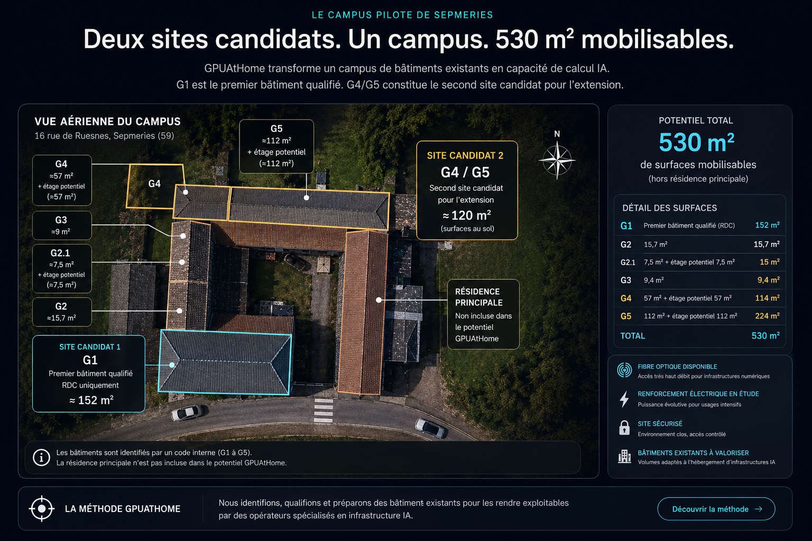
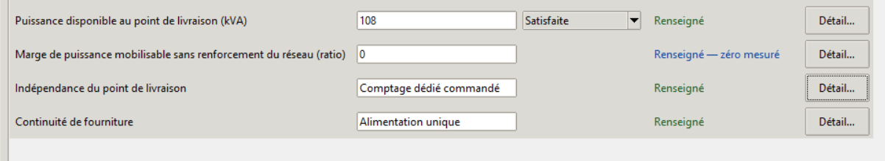
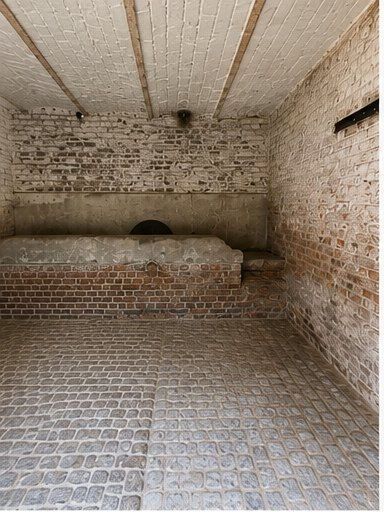
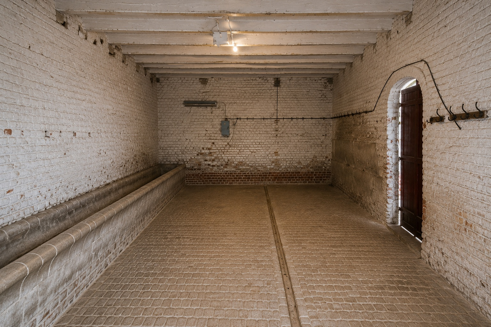
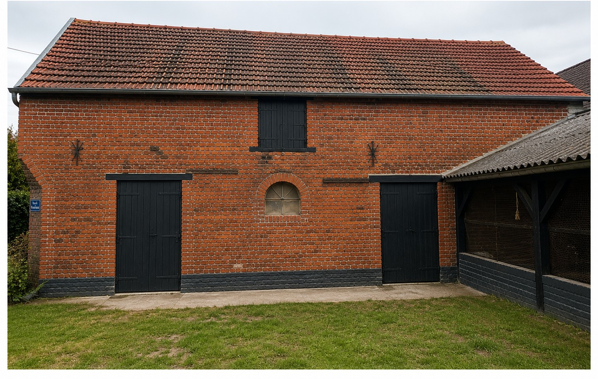
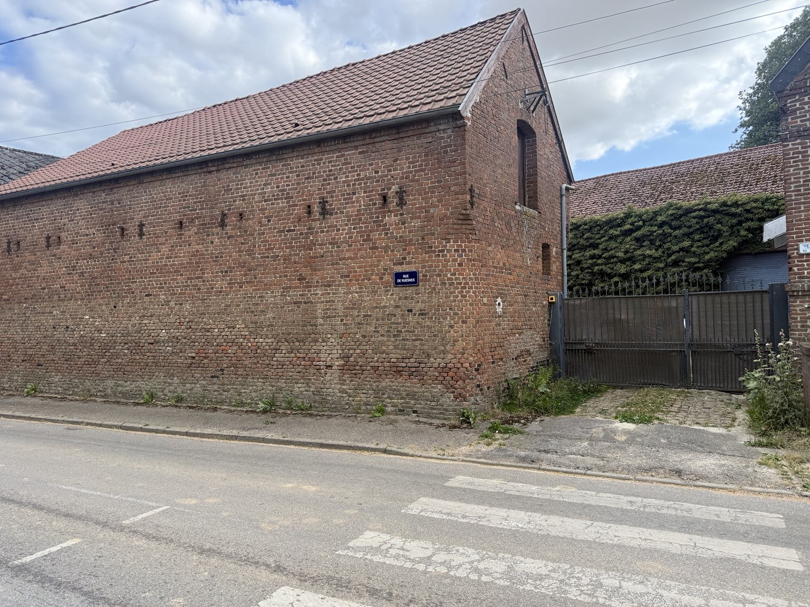
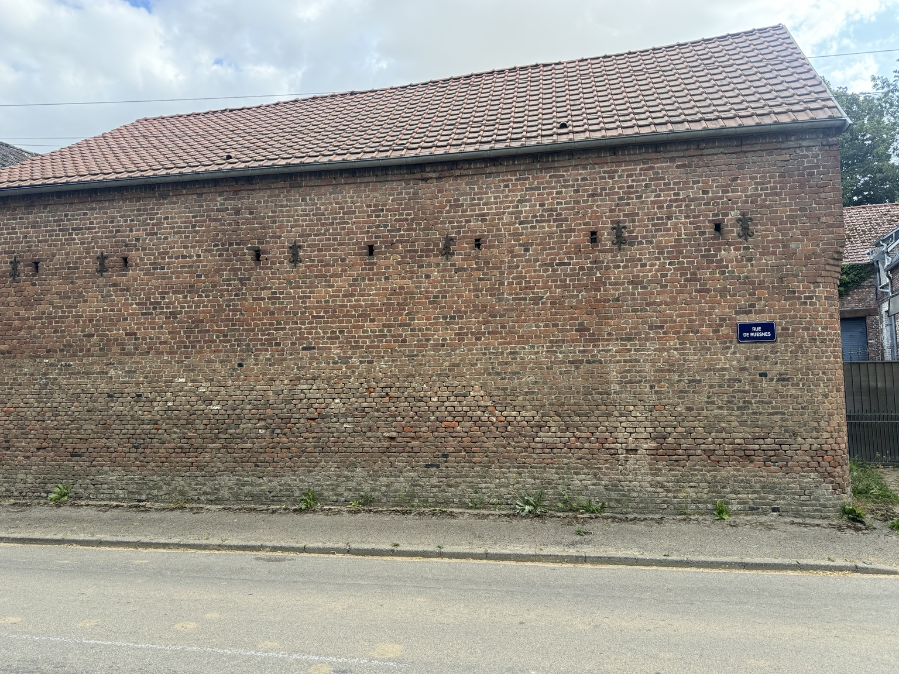
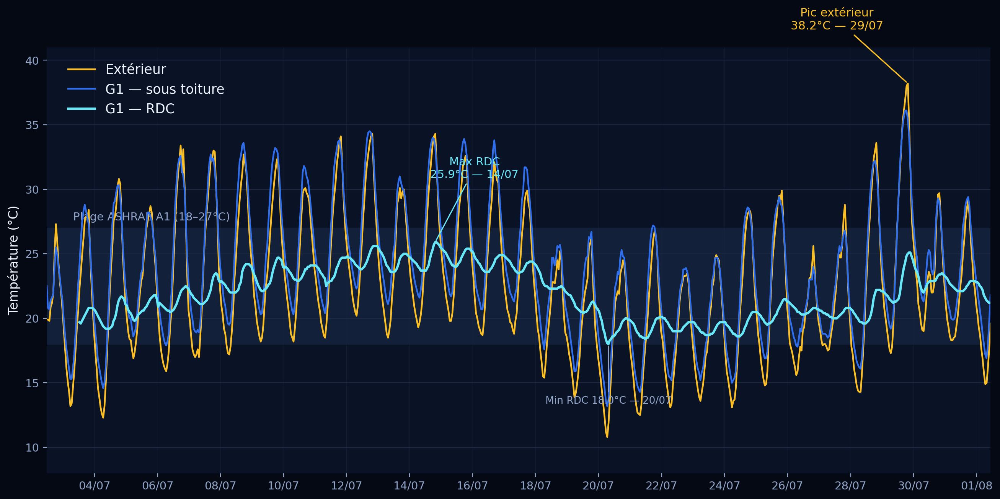

Explosion de la demande IA
Les besoins en calcul accéléré progressent plus vite que les capacités disponibles.
Infrastructure IA distribuée · Hauts-de-France
GPUAtHome identifie, qualifie, prépare et organise la mise à disposition de bâtiments existants réunissant énergie, connectivité et conditions techniques pour accueillir des infrastructures de calcul IA. Sepmeries est le campus pilote GPUAtHome, où la méthode est validée en conditions réelles avant d'être déployée chez des propriétaires partenaires.
Une méthode propriétaire, validée en conditions réelles sur le campus pilote de Sepmeries, avant déploiement chez des propriétaires partenaires.
Campus pilote · Sepmeries
Statut : méthode validée en conditions réelles — campus pilote de Sepmeries
Le marché
La demande de calcul IA ne se heurte plus seulement à la disponibilité des GPU, mais à la capacité physique de les déployer : énergie, refroidissement, foncier technique, raccordement et délais de mise en service. Créer un nouveau centre de données implique des délais longs — foncier, études environnementales, autorisations, raccordement, construction. Cet écart crée une opportunité pour une approche complémentaire : mobiliser le potentiel technique de bâtiments existants, avec des délais d'activation potentiellement plus courts qu'une construction neuve.
Pour 2026, Meta a resserré sa prévision de dépenses d'investissement (CAPEX) à 130-145 Md$, en grande partie pour soutenir son infrastructure IA. Microsoft indique que la demande client pour Azure continue de dépasser la capacité disponible. L'Agence internationale de l'énergie projette un doublement de la consommation électrique des centres de données, de 485 TWh en 2025 à environ 950 TWh en 2030 — soit près de 3% de la demande électrique mondiale.
Cette tension se retrouve aussi au niveau du réseau électrique. En France, RTE recense environ 300 centres de données en activité pour une consommation d'environ 10 TWh par an, soit près de 2% de la consommation nationale. En mai 2026, RTE avait réservé près de 18 GW de capacité pour environ 80 projets de centres de données, contre 5 GW fin 2024, tandis que les demandes de raccordement cumulées atteignaient 28,6 GW — dont environ 7 GW en Île-de-France et près de 6 GW en Hauts-de-France. Dans son enquête 2026, l'Uptime Institute classe la prévision de capacité, les ruptures d'approvisionnement et la disponibilité électrique parmi les principales préoccupations des exploitants, et identifie les délais de déploiement des grandes capacités électriques comme une contrainte pesant sur la construction.
Un signal local — bassin valenciennois
En mai 2026, EDF a retenu SoftBank Group comme attributaire pressenti pour concevoir, construire et exploiter un centre de données de 400 MW à Bouchain, sur le site de l’ancienne centrale thermique. Le projet entre désormais dans une phase d’études techniques, environnementales et administratives nécessaires à sa réalisation.
En juillet 2026, RTE a parallèlement lancé l’étude d’une infrastructure de raccordement mutualisée entre Maubeuge, Valenciennes et Denain. RTE cite explicitement les data centers parmi les nouveaux besoins électriques de cette zone industrielle prioritaire et invite les porteurs de projets de raccordement ou d’augmentation de puissance à se déclarer avant la finalisation de l’étude, envisagée en septembre 2026.
Un détail mérite attention : EDF ne part pas d’un terrain nu. Le projet réemploie le site d’une ancienne centrale thermique, déjà desservi par une infrastructure électrique lourde. Même à 400 MW, et même pour l’un des acteurs industriels les plus puissants du pays, partir de ce qui existe déjà constitue un avantage.
Le délai n’est pas seulement un problème de construction. Les projets récents montrent que déployer de nouvelles capacités engage aussi le foncier, le raccordement, les études environnementales et les autorisations. À Bouchain, le projet de 400 MW est encore en phase d’études techniques, environnementales et administratives. À Alixan (Drôme), un permis délivré en décembre 2025 a été suspendu par la justice en juillet 2026. À Blyes (Ain), la seule consultation publique environnementale ouverte à l’été 2026 s’étend sur trois mois. GPUAtHome explore une autre trajectoire : partir d’un bâtiment existant, qualifier ce qui est déjà disponible, puis adapter uniquement ce que son exploitation nécessite — à une échelle distribuée, plutôt que de reproduire le modèle d’un grand campus centralisé unique.
Sources : Meta (résultats T2 2026) · Microsoft (résultats T4 exercice 2026) · Agence internationale de l'énergie, Key Questions on Energy and AI, 2026 · RTE (2026) · Uptime Institute, 16eenquête mondiale sur les centres de données (2026) — voir les sources en bas de page.
C'est précisément cette tension que GPUAtHome adresse — non pas en construisant un centre de données de plus, mais en réutilisant des bâtiments existants. C'est le point de départ de la démarche, ci-dessous.
Les besoins en calcul accéléré progressent plus vite que les capacités disponibles.
Les grands centres nécessitent plusieurs années de développement.
Les infrastructures intermédiaires et modulaires peuvent apporter de nouvelles capacités plus rapidement.
Mobiliser le potentiel technique de bâtiments existants disposant déjà d'un accès aux réseaux, afin de raccourcir les délais d'activation.
La logique de changement d’échelle
GPUAtHome ne cherche pas à reproduire un grand centre de données centralisé dans chaque bâtiment, ni à présenter plusieurs sites géographiquement distincts comme un cluster unique fortement couplé. Chaque site est qualifié pour une capacité et des usages compatibles avec ses caractéristiques électriques, réseau et techniques propres.
Le déploiement progressif d’un portefeuille de sites qualifiés peut constituer une capacité électrique et informatique distribuée. Les charges d’inférence, qui peuvent être réparties entre plusieurs nœuds sans nécessiter le même niveau de couplage entre GPU qu’un entraînement distribué intensif, constituent à ce stade un cas d’usage particulièrement pertinent à confronter aux opérateurs. La capacité effective du réseau doit donc être appréciée en fonction des charges réellement distribuables, et non par la simple addition des puissances de raccordement.
À terme, la valeur ne réside pas seulement dans chaque site pris isolément, mais dans un portefeuille instruit selon un référentiel commun : documentation comparable, qualification homogène et capacité à intégrer progressivement de nouveaux nœuds. Cet effet de réseau constitue une hypothèse stratégique à valider avec les premiers propriétaires et opérateurs.
Sepmeries est le premier démonstrateur de cette logique : valider la méthode sur un site réel, déterminer les charges compatibles avec ce site, puis tester la reproductibilité de la même qualification sur des bâtiments tiers.
La France dispose d’un patrimoine bâti diffus — anciennes fermes, bâtiments agricoles sans usage, ateliers, entrepôts, dépendances, immobilier d’activité sous-utilisé. Une partie de ce patrimoine possède déjà les caractéristiques physiques que recherche le calcul IA : volume, structure, inertie thermique, accès, foncier disponible pour un raccordement.
Lorsque ces conditions sont réunies, un bâtiment existant peut accueillir des équipements exploités par un opérateur spécialisé. Le propriétaire ne cède pas son actif : il lui redonne un usage productif et perçoit un revenu locatif. Une partie de l’économie d’infrastructure liée à l’IA — aujourd’hui très concentrée sur quelques très grands sites — peut ainsi se répartir dans le tissu bâti existant.
Le site pilote de Sepmeries illustre ce cas : une ancienne exploitation agricole dont les dépendances ont été qualifiées selon le référentiel GPUAtHome (36 critères, 12 familles), avec une offre de raccordement 108 kVA acceptée et des relevés thermiques continus publiés.
Limite — Tous les bâtiments ne sont pas éligibles. La qualification est individuelle, et la puissance électrique disponible reste dans la majorité des cas le facteur bloquant. GPUAtHome ne propose pas un dispositif de revenu généralisable, mais une méthode pour identifier les sites où cette valorisation est techniquement possible.
Un centre de données neuf part d’un projet immobilier et industriel encore à créer : foncier, gros œuvre, infrastructures de raccordement, puis exploitation. GPUAtHome part d’un actif qui existe déjà. Le foncier, les murs et l’accès au site sont en place.
Le travail consiste alors à qualifier l’existant, sécuriser la puissance et la connectivité nécessaires, puis réaliser les seules adaptations correspondant au besoin réel de l’opérateur. Les études comme les travaux portent sur l’adaptation d’un bâtiment, non sur la création d’un actif nouveau — ce qui réduit le nombre d’étapes, l’ampleur des travaux et les interfaces à sécuriser.
Cette approche ne place pas les projets hors du cadre réglementaire : selon le bâtiment, sa destination initiale, les travaux prévus et les équipements installés, des autorisations d’urbanisme, études ou procédures environnementales peuvent rester nécessaires. La qualification GPUAtHome intègre ces contraintes site par site.
La méthode GPUAtHome
GPUAtHome identifie, qualifie, prépare et documente des bâtiments existants susceptibles d'accueillir des infrastructures de calcul IA. La démarche est conçue comme un modèle reproductible, appliqué successivement à différents sites. Trois étapes, toujours dans le même ordre.
Le même processus en six étapes s'applique à chaque bâtiment qualifié par GPUAtHome.
Chaque bâtiment est évalué selon le Qualification Framework — le référentiel propriétaire GPUAtHome — mis en œuvre dans le logiciel de qualification développé en interne. Le Framework, le logiciel et la première qualification réelle sont présentés plus bas sur cette page.
Mise à disposition d'un bâtiment qualifié et préparé pour accueillir des équipements GPU.
(Modèle « Powered Shell » — infrastructure d'accueil)
Certains investissements techniques (refroidissement, protection incendie, supervision ou évolutions électriques) peuvent être définis contractuellement selon les besoins du partenaire.
Cette méthode n'est pas restée théorique : elle est appliquée, mesurée et documentée sur un premier campus réel — ci-dessous.
Le campus pilote
GPUAtHome qualifie et prépare des bâtiments existants afin de créer progressivement de nouvelles capacités d'hébergement pour le calcul IA : jusqu'à 530 m² de potentiel documenté, réparti sur plusieurs bâtiments du même site, hors résidence principale.

Le campus compte plusieurs bâtiments identifiés par un code interne (G1 à G5). G1 — 76 m² au rez-de-chaussée, complétés par un étage documenté de 76 m² — est le premier bâtiment qualifié selon le Qualification Framework GPUAtHome : son rez-de-chaussée constitue la première phase opérationnelle du bâtiment, celle sur laquelle surface, énergie et comportement thermique ont déjà été mesurés. G4/G5 forment le second secteur identifié du campus, avec un potentiel complémentaire d'environ 120 m² au sol.
Situé dans une ancienne ferme disposant de plusieurs dépendances, le campus a déjà fait l'objet de mesures et d'évaluations concrètes sur plusieurs composantes : surface, énergie et comportement thermique. Connectivité dédiée, sûreté, protection incendie, redondance et certains aspects d'exploitation restent encore à évaluer ou à mettre en place.
Sepmeries se situe à environ 20 km de Valenciennes, 80 km de Lille et 110 km de Bruxelles, dans un bassin industriel et logistique connecté.
Le référentiel
Le moteur de GPUAtHome
GPUAtHome s'appuie sur un Qualification Framework propriétaire permettant d'évaluer objectivement la capacité d'un bâtiment à accueillir des infrastructures de calcul IA. Le résultat n'est jamais une note unique : ce sont des sorties techniques qualifiées et traçables, établies sur des domaines d'instruction complémentaires et produites uniquement lorsque les conditions requises sont réunies.
Des domaines d'instruction complémentaires, articulés selon une méthode reproductible et fondée sur des preuves.
Pourquoi c'est important
Le Qualification Framework constitue la principale propriété intellectuelle de GPUAtHome. Le référentiel détaillé — ses seuils, ses règles de décision et ses mécanismes d'évaluation — n'est pas publié. Les partenaires bénéficient des résultats produits par cette méthode : qualifications, rapports officiels, recommandations — sans accès à son fonctionnement interne.
Le référentiel ne vit pas sur le papier : il est mis en œuvre dans un logiciel propriétaire — présenté ci-dessous.
Le logiciel
Développé en interne, GPUAtHome Manager structure l'instruction de chaque bâtiment, associe les réponses aux preuves, applique les règles du référentiel et empêche toute conclusion tant que les conditions requises ne sont pas réunies.

GPUAtHome Manager — génération actuelle validée sous Windows — version interne.
La qualification de G1 a été produite avec la première génération stabilisée du logiciel. La génération actuelle — validée sous Windows, version interne — ne réécrit aucune qualification antérieure.
Première application réelle — G1
Le Qualification Framework est déjà mis en œuvre au travers de l'outil propriétaire de qualification. Les critères sont intégrés progressivement à partir d'éléments objectivement documentés afin de produire un rapport de qualification reproductible et fondé sur des preuves.
Première campagne de qualification
Complétude de la qualification
34 critères évalués sur 36 lors de la première campagne de qualification (résultat historique) 2 critères restés ouverts à l'issue de cette campagne, pour des motifs distincts
Statut de la première campagne : qualifiée sous réserve
Une nouvelle instruction structurée de G1 est en cours dans GPUAtHome Manager. Elle ne réécrit pas le résultat de la première campagne et n'a pas encore produit de rapport officiel.
Outils de qualification
Un socle d'actifs, une trajectoire
Référentiel, moteur de qualification, logiciel, format de rapport officiel, archivage et traçabilité : l'ensemble du socle est développé en interne, appliqué à un campus pilote réel et documenté techniquement. La grille détaillée reste confidentielle ; la démonstration, elle, est publique.
Qualification de G1
G1 est le premier bâtiment du campus pilote de Sepmeries à avoir été passé au crible du Qualification Framework GPUAtHome. Son rez-de-chaussée — première phase opérationnelle du bâtiment — a été mesuré et documenté en détail, et sa qualification est consignée dans un rapport officiel figé et archivé, produit avec le logiciel de qualification GPUAtHome.
Les éléments présentés ci-dessous documentent le premier bâtiment pilote étudié selon la méthode GPUAtHome. Ils rassemblent les principales caractéristiques physiques relevées sur site et les observations ayant contribué à sa qualification technique.
| Caractéristique | Valeur |
|---|---|
| Emprise au sol | 76 m² |
| Surface intérieure documentée | 68,6 m² |
| Construction | Ancien bâtiment agricole |
| Usage historique | Bâtiment d'élevage |
| Structure | Maçonnerie traditionnelle conservée |
| Sol | Pavés d'origine conservés |
| Largeur des portes de façade | 1,12 m |
| Hauteur des portes de façade | 2,15 m |
| Largeur du passage entre les deux volumes | 1,12 m |
Les dimensions présentées correspondent à des relevés réalisés sur site.

Surface intérieure : 17,4 m² · Hauteur libre : 2,70 m
Volume technique secondaire conservé dans son état d'origine. Cette zone dispose d'une arrivée d'eau et d'une auge maçonnée, pouvant accueillir des équipements techniques auxiliaires selon les besoins du futur exploitant.

Surface intérieure : 51,2 m² · Hauteur libre : 2,90 m
Ce volume a accueilli la campagne de mesures thermiques présentée dans ce dossier. Les dimensions, hauteurs libres et accès relevés sur site constituent les données d'entrée des futures études d'implantation réalisées avec les opérateurs partenaires.

Emprise au sol : 76 m²
Façade principale du bâtiment pilote G1, vue depuis la cour intérieure sécurisée. Cette configuration permet un accès indépendant au bâtiment tout en offrant un environnement facilement sécurisable pour une future exploitation technique.

Vue générale du bâtiment pilote G1 depuis la rue, montrant le portail d'accès métallique, la longueur du mur et l'environnement immédiat du site.

Vue de côté de la façade côté rue, quasiment aveugle, mettant en valeur la maçonnerie en briques pleines et le caractère massif du bâtiment.
Résultats expérimentaux
Ce qui a été concrètement mesuré, obtenu et projeté sur le site pilote — par opposition à la présentation ci-dessus.
Résultats documentés
Validation expérimentale
Ce qui explique le comportement thermique observé ci-dessous.
Sur la période du 3 juillet au 1er août 2026 — couvrant un premier pic estival, un net rafraîchissement autour du 20 juillet, puis un second épisode de chaleur plus intense le 29 juillet — le rez-de-chaussée de G1 a été suivi en continu aux côtés de l'étage et de l'extérieur, avec un relevé toutes les heures.

Les deux valeurs restent dans l'intervalle 18–27°C
Les mesures confirment un fort amortissement des variations extérieures au niveau du RDC G1, sans refroidissement actif ni charge GPU pendant la campagne. Elles constituent un indicateur favorable de comportement passif et alimentent le module thermique du Qualification Framework. Elles ne remplacent ni des essais en charge réelle ni le dimensionnement du système de refroidissement nécessaire à l'exploitation.
Valeur exclue du calcul de la moyenne : le tout premier relevé RDC (26,1°C, 3 juillet à 11h30) constitue un artefact d'installation isolé — le capteur revient à 19,7°C dès le relevé suivant, une heure plus tard, incohérent avec la dynamique horaire environnante. Aucune autre valeur aberrante n'a été détectée sur les 720 relevés extérieur, 720 sous-toiture et 695 RDC exploités (aucune variation supérieure à 8°C entre deux relevés horaires consécutifs). Le relevé brut (26,1°C) comme la valeur après stabilisation (25,9°C) restent tous deux dans l'intervalle 18–27°C.
Dérive nocturne : le minimum nocturne du RDC est passé de 19,2°C (4 juillet) à 24,0°C (15 juillet), puis a reflué jusqu'à 18,0°C — le plus bas de la série — le 20 juillet à la faveur d'un refroidissement extérieur, avant de remonter à 22,1°C au 31 juillet suite à l'épisode de chaleur du 29 juillet. Ce comportement donne un premier élément de lecture de la dynamique de récupération du bâtiment, cohérent avec l'inertie thermique des murs en brique de 35 cm.
Méthode de calcul du chiffre de 86,5% : pour chaque jour calendaire complet, amplitude quotidienne = maximum du jour moins minimum du jour, calculée séparément pour l'extérieur et le RDC ; atténuation = 1 − (amplitude RDC / amplitude extérieure). Moyennée sur les 28 journées calendaires complètes analysées (4–31 juillet ; le 3 juillet et le 1er août sont des journées partielles, exclues de cette moyenne), cela donne 86,5%, avec un minimum à 78,6% (18 juillet, jour où l'amplitude extérieure était la plus faible de la période) et un maximum à 92,9% (27 juillet).
Point notable : le maximum RDC de la campagne après stabilisation (25,9°C) a été atteint le 14 juillet, et non le 29 juillet lors du nouveau pic extérieur record (38,2°C, soit 4°C de plus qu'au 14 juillet). Ce jour-là, le RDC n'a atteint que 25,1°C — le rafraîchissement intervenu autour du 20 juillet avait abaissé le niveau de base du bâtiment avant ce second épisode de chaleur.
Point de vigilance : la marge basse par rapport à cet intervalle de référence s'est réduite à exactement 0,0°C le 20 juillet à 7h30 (relevé à 18,0°C) — un point d'attention pour le dimensionnement futur, davantage que la marge haute (1,1°C au pic du 14 juillet). Cette analyse reste un indicateur de comportement passif et ne constitue pas une étude thermique validée.
Le 7 juillet 2026, Enedis a émis une offre officielle de raccordement de 108 kVA pour le site pilote GPUAtHome, confirmant la faisabilité du raccordement et constituant la première validation opérationnelle externe du projet. Prochaines étapes : acceptation de l'offre, réalisation du raccordement, puis déploiement progressif.
La puissance IT effectivement mobilisable dépendra de l'architecture retenue, des réserves d'exploitation et des hypothèses énergétiques validées avec l'opérateur. Les 108 kVA correspondent à la capacité documentée par l'offre Enedis obtenue. Une montée en puissance jusqu'à environ 250 kVA a été identifiée comme possible lors des échanges avec le syndicat d'électricité de l'arrondissement ; son engagement dépendra des besoins de l'opérateur retenu et des validations techniques et contractuelles correspondantes.
| Besoin de l'opérateur | Réponse GPUAtHome |
|---|---|
| Disponibilité foncière | Campus identifié : G1, premier bâtiment qualifié, jusqu'à 530 m² de potentiel documenté au total |
| Énergie | Offre officielle de raccordement Enedis obtenue : 108 kVA |
| Refroidissement | Bâtiment instrumenté, comportement thermique passif mesuré sur un épisode de chaleur estivale |
| Connectivité | Connectivité dédiée G1 en cours de préparation ; mesure indicative sur l'accès FTTH existant, vers un serveur situé à Paris : 861 Mb/s descendant et 798 Mb/s montant en moyenne (crêtes 893 / 845 Mb/s), latence moyenne 15 ms (minimum 13 ms, gigue 6 ms) — sans assimilation à une future offre opérateur dédiée, à confirmer sur le raccordement propre à G1 |
| Type de charge | À ce stade, l’inférence distribuable constitue un cas d’usage particulièrement pertinent à tester sur des nœuds de cette taille. Les charges nécessitant un couplage GPU étroit entre sites ne sont pas présentées comme cible du modèle distribué. |
| Déploiement | Site préparé pour être adapté au cahier des charges du partenaire |
| Redondance | Raccordement unique au stade pilote ; niveau de redondance à définir conjointement avec l'opérateur selon les besoins |
| Environnement technique | Propreté, maîtrise de la poussière et accès à définir avec l'opérateur en amont de l'installation des équipements |
Fait partie intégrante de la méthode de qualification
Redondance — Le site bénéficiera de son propre compteur Enedis et d'une alimentation indépendante. Les niveaux de redondance seront définis avec le partenaire selon les exigences de disponibilité du projet.
À la suite de l'obtention de l'offre officielle de raccordement Enedis, GPUAtHome poursuit sa réflexion sur l'intégration d'une production d'énergie locale afin d'accompagner le développement de capacités de calcul IA plus sobres et mieux intégrées à leur territoire.
Jusqu'à 240 m² de toiture pourraient accueillir une installation photovoltaïque professionnelle sur le site pilote de Sepmeries — hypothèse à confirmer par une étude dédiée.
Une installation d'environ 50 kWc pourrait produire entre 42 et 50 MWh par an, selon l'orientation des toitures et les conditions d'exploitation.
Cette production représenterait environ 5 kW continus sur l'année. Elle ne couvrirait pas seule les besoins d'un site GPU intensif, mais pourrait contribuer partiellement à l'équilibre énergétique du projet, en complément du raccordement principal.
L'objectif est d'associer valorisation du patrimoine existant, production d'énergie locale et infrastructure numérique, dans une logique progressive et réaliste.
Stratégie économique
GPUAtHome avance selon deux trajectoires complémentaires pouvant progresser en parallèle : mettre G1 en exploitation sur le campus pilote de Sepmeries et appliquer la méthode de qualification à un premier bâtiment tiers. L'une valide l'exploitation ; l'autre valide la reproductibilité hors du site du fondateur.
G1 Sepmeries → premier opérateur → validation en exploitation → extension éventuelle du campus
Premier site tiers → qualification avec GPUAtHome Manager → retour du propriétaire → constitution progressive d'un portefeuille de sites qualifiés
La qualification d'un bâtiment tiers ne dépend pas de la mise en exploitation commerciale préalable de G1. Ces deux voies de validation peuvent donc être menées simultanément, sans présumer du modèle d'aller-au-marché définitif.
GPUAtHome prépare l'application de la même approche à des bâtiments existants appartenant à des tiers : qualification préalable, structuration du projet et mise en relation avec un opérateur spécialisé. Ce test de reproductibilité peut débuter avant la mise en exploitation commerciale de G1. Les modalités précises de rémunération de GPUAtHome seront testées avec les premiers partenaires et ne sont pas présentées ici comme déjà arrêtées.
Solution clé en main
GPUAtHome structure le projet mais n'est ni l'opérateur GPU ni le propriétaire standard des bâtiments.
Thèse propriétaire
Un bâtiment peut valoir peu dans un usage immobilier classique — entrepôt, grange, dépendance, local inoccupé — tout en présentant des caractéristiques rares pour le calcul IA : puissance électrique disponible, connectivité, configuration physique, comportement thermique, disponibilité.
C’est le mécanisme sur lequel GPUAtHome travaille : le loyer versé par un opérateur rémunère une capacité technique, non une surface. La qualification est ce qui rend cette capacité visible, mesurable et comparable d’un site à l’autre.
GPUAtHome fait l’hypothèse qu’un bâtiment qualifié pour le calcul IA peut acquérir une valeur d’usage technique distincte de sa valeur immobilière traditionnelle, et que cette valeur peut se traduire dans les conditions du bail négocié avec l’opérateur. Sepmeries est le site où cette hypothèse est éprouvée en premier : offre de raccordement 108 kVA obtenue le 07/07/2026, campagne thermique instrumentée, référentiel de qualification à 36 critères.
Cette valorisation dépend de l’usage technique effectivement contractualisé et des adaptations réalisées ; elle ne préjuge pas de la valeur du bâtiment pour d’autres usages à l’issue du contrat. Aucun bail n’a été signé à ce jour.
Plusieurs mécanismes de revenus sont testés avec les premiers partenaires — honoraires de qualification et de structuration, intermédiation et/ou participation récurrente liée au site — avant fixation du modèle.
Les hypothèses économiques détaillées (dépenses d'investissement — CAPEX — de G1, de l'extension du campus, du déploiement chez des propriétaires partenaires, revenu locatif, calendrier de financement, rendement) sont communiquées sous confidentialité aux investisseurs et partenaires qualifiés — voir le Dossier investisseurs dans la section Documentation ci-dessous.
De la démonstration au déploiement
Où en est le projet aujourd'hui, ce qui est activement en chantier, et ce qui vient ensuite — sur une seule ligne du temps.
Perspective — À terme, les qualifications pourront alimenter un label GPUAtHome Ready à plusieurs niveaux, sous réserve de validation de son cadre technique et juridique.
Écosystème
GPUAtHome est ouvert aux échanges avec les acteurs de l'infrastructure, de l'énergie, des collectivités et du calcul IA intéressés par cette approche.
Ingénieurs infrastructure, spécialistes refroidissement ou calcul distribué : échanger sur la grille de qualification et les conditions techniques de déploiement.
Acteurs du raccordement, énergéticiens ou experts en montée en puissance : partager leur lecture des conditions de raccordement et de production locale.
Collectivités et agences de développement territorial : évaluer la pertinence du modèle et identifier les dispositifs d'accompagnement disponibles.
Équipes IA ou de recherche cherchant un environnement de test à petite échelle pour de l'inférence ou de l'expérimentation.
Le site pilote est désormais prêt à être évalué avec des opérateurs du secteur afin de définir les exigences techniques (réseau, refroidissement, sécurité et exploitation) et d'adapter l'infrastructure à leurs besoins.
Le porteur du projet
Benjamin Deram a initié, documenté et structuré la démonstration de Sepmeries et la méthode de qualification GPUAtHome. Il dispose de plus de vingt années d'expérience dans le secteur bancaire, au contact des professionnels, PME et ETI, dans le développement commercial, le financement d'entreprises, l'analyse de projets et l'accompagnement économique.
GPUAtHome est né d'une réflexion sur la convergence entre l'essor de l'IA, les besoins croissants en puissance de calcul et les opportunités offertes par la valorisation d'actifs immobiliers existants.
Le point de départ a été concret : une propriété rurale avec plusieurs dépendances sous-exploitées, au moment où le secteur de l'IA peine à trouver des sites adaptés pour son infrastructure de calcul. Plutôt que d'en rester à l'idée, le choix a été de la tester directement sur un site réel, avec des mesures réelles.
Plus de vingt années dans le secteur bancaire, avec une expertise dans le développement commercial, le financement d'entreprises, l'analyse économique et l'accompagnement de projets auprès de professionnels, PME et ETI.
GPUAtHome est à ce jour porté directement par son fondateur. La création d'une société dédiée (probablement une SAS) est prévue préalablement à toute contractualisation avec un partenaire d'exploitation ou à toute ouverture du capital à des investisseurs.
Les compétences complémentaires nécessaires — infrastructure, énergie, calcul distribué — sont en cours de structuration. Aucun comité d'experts ni partenariat technique n'est à ce jour contractualisé : le projet recherche activement des partenaires industriels et techniques pour mettre à l'épreuve et affiner le modèle avant tout déploiement à plus grande échelle.
Deux niveaux de documentation — un aperçu ouvert à tous, et un niveau détaillé réservé aux interlocuteurs qualifiés.
Les documents confidentiels contiennent des hypothèses économiques détaillées et des éléments commerciaux et financiers communiqués uniquement aux interlocuteurs qualifiés. Le Qualification Framework lui-même — la grille détaillée, ses seuils et ses règles de décision — n'est pas transmis : les partenaires reçoivent les résultats qu'il produit (qualifications, rapports officiels, recommandations).
Documents confidentiels — diffusion restreinte, aucun n'est proposé en téléchargement direct. Chacun est préparé ou actualisé lorsqu'une demande qualifiée est reçue. L'étude CAPEX détaillée (dépenses d'investissement) est réservée aux seuls investisseurs qualifiés.
Étudier un premier déploiement, proposer un bâtiment à qualifier, évaluer Sepmeries avec un opérateur, ou échanger sur un partenariat — sélectionnez votre profil et écrivez-nous directement.
GPUAtHome · Sepmeries · Hauts-de-France · France
Sources